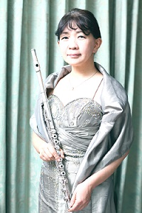

白川 真理（本名 野中真理）
高松高校昭和52年卒
プロフィール

武蔵野音楽大学卒業。
1984年～86年ミュンヘンにてマリアンヌ・ヘンケル女史の下、研鑽を積む。
帰国後は川崎優氏率いる日本初の女性プロアンサンブル『ムジカ・フィオーレ』の主要メンバーとして、またフリー奏者として活動。
2000年より植村泰一氏に師事し、現在に至る。
2003年より武術研究者・甲野善紀氏の下、その術理を楽器演奏に応用する研究に取り組む。
専門誌『ザ・フルート』に『古武術に学ぶフルート』を2年間連載。
関連の講習会を防衛大学校、電気通信大学等より依頼される。
2013年には日本フルート協会主催『第16回日本フルートコンヴェンション2013 in 高松』より講習会を招聘される。
CD『SERENADE～flow～』、『無伴奏フルート作品の夕べ～銀のロットと共に～』、フルート編曲譜『シャコンヌ/バッハ』がアルソ出版社より発売中。
遠音のさすビンテージフルートの響きの追究が生涯のテーマ。
使用楽器は5代目ルイ・ロット（1911年製・銀）、初代ルイ・ロット（1872年製・マイユショー）。